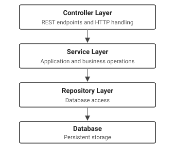
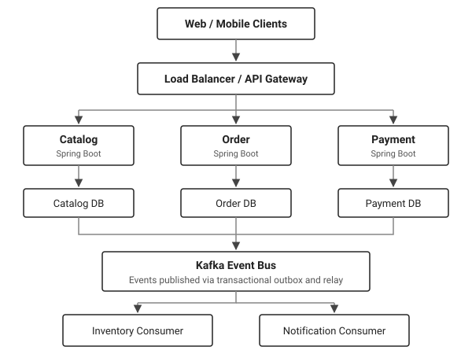

Software Architecture is the high-level structure of a software system, including its major components, their responsibilities, their relationships and the fundamental decisions governing how the system operates and evolves.
Software Architecture defines how a software system is organized, how its components interact and how the system achieves qualities such as scalability, maintainability, performance, security and reliability.
For example, when designing an e-commerce application, architecture addresses questions such as:
- Should the application be a monolith or microservices?
- Should business logic follow Layered or Hexagonal Architecture?
- How should Order, Payment and Inventory components communicate?
- Should communication be synchronous or asynchronous?
- Should services share a database or own their data?
- How should failures and distributed transactions be handled?
- Which responsibilities should be isolated so the application can evolve?
There is no single universally accepted classification of all software architectures. Different terms describe different dimensions of the same system.
The following is a practical classification rather than a rigid industry standard.
Software Architecture Taxonomy
Software Architecture: multiple complementary classification dimensions.
- Structural stylesHow code and components are organized
Layered, Hexagonal, Microkernel - Service decompositionHow applications are divided
Monolith, Modular Monolith, SOA, Microservices - DistributionWhere and how components run
Centralized, Distributed, P2P - CommunicationHow components interact
Synchronous, Asynchronous, Event-Driven - Execution and deploymentHow software is hosted
Server-based, Containers, Serverless, Edge - Architectural patternsReusable solutions to problems
Saga, CQRS, Outbox, API Gateway - Data architectureHow information is stored and processed
Centralized, Federated, Streaming, Event Sourcing - Architectural scopeWhich level is being designed
Enterprise, Solution, Application, Infrastructure
An important consequence is that a single application may simultaneously use:
Microservices + Hexagonal + Event-Driven + Distributed
For example, a Spring Boot e-commerce platform can consist of independently deployed microservices, each internally organized using Hexagonal Architecture, exchanging events through Kafka and running across multiple servers.
These classifications are not mutually exclusive.
An architecture style describes a recurring way of organizing system elements, responsibilities, dependencies and interactions.
Structural and application organization styles
| Architecture | Main idea | Typical use |
|---|---|---|
| Layered (N-layer) | Code is organized into logical layers | Enterprise CRUD applications |
| N-tier | Application parts are separated into physical or logical tiers | Traditional enterprise applications |
| Hexagonal (Ports and Adapters) | Domain logic is isolated from external technologies | Testable, domain-focused applications |
| Clean Architecture | Dependencies point toward business rules | Large applications with evolving requirements |
| Onion Architecture | Domain model at center, infrastructure outside | Domain-driven applications |
| Microkernel / Plug-in | Small core extended through plug-ins | IDEs, extensible platforms |
| Pipe-and-Filter | Data passes through independent processing stages | ETL, compilers, data pipelines |
| MVC / MVVM | Separates UI responsibilities | Web, desktop and mobile interfaces |
Layered Architecture Example — Spring Boot

Advantages: Simple organization, separation of concerns, familiar development model.
Limitations: Business logic may become tightly coupled to framework and persistence details; changes can propagate across layers.
Layered Architecture describes logical dependencies. N-tier Architecture additionally emphasizes physical deployment boundaries, so the two terms should not always be treated as identical.
Application decomposition and service styles
| Architecture | Main idea | Advantages | Challenges |
|---|---|---|---|
| Monolithic | Application deployed as one unit | Easy initial development and operations | Large deployments may become difficult |
| Modular Monolith | One deployment with strongly separated internal modules | Simpler operations, strong module boundaries | Modules can become coupled if boundaries are not enforced |
| Client–Server | Clients request capabilities from servers | Clear separation of clients and providers | Server dependency and network overhead |
| Service-Oriented Architecture | Business capabilities exposed as reusable services | Enterprise integration and reuse | Governance and integration complexity |
| Microservices | Independently deployable business services | Independent releases and scaling | Distributed transactions, operational overhead |
| Service-based Architecture | Coarser-grained services, sometimes with shared infrastructure or data | Pragmatic middle ground | Shared dependencies can limit autonomy |
Microservices are not simply a monolith split into multiple Spring Boot projects. Their key characteristics include business-oriented boundaries, independent deployment and ownership of service data.
Communication and processing styles
| Architecture | Main idea | Example |
|---|---|---|
| Event-Driven | Components react to published events | Kafka OrderPlaced event |
| Message-Oriented | Components exchange messages through middleware | RabbitMQ task processing |
| Request–Response | Requester expects a response from another component | REST/gRPC APIs |
| Web-Queue-Worker | Web application queues work for background workers | Video processing service |
| Batch Processing | Data is processed in bounded batches | Nightly report generation |
| Stream Processing | Continuous input is processed as it arrives | Real-time fraud analytics |
| Reactive Architecture | Non-blocking, asynchronous processing with attention to responsiveness and resilience | High-concurrency event processing |
A subtle distinction: asynchronous communication is a communication mechanism, while Event-Driven Architecture is a broader organizing style. An asynchronous task queue does not automatically make a system event-driven.
Distributed and infrastructure-oriented styles
| Architecture | Main idea | Example |
|---|---|---|
| Centralized | Primary processing controlled from a central system | Traditional application server |
| Distributed | Components execute on different networked nodes | Multi-node banking platform |
| Peer-to-Peer (P2P) | Nodes act as both clients and servers | BitTorrent |
| Space-Based | Processing and distributed in-memory data reduce central database bottlenecks | High-throughput transactional workloads |
| Serverless | Application executes on managed runtime services | AWS Lambda-based workflow |
| Cloud-Native | Built for automation, elasticity, resilience and managed/cloud platforms | Containerized applications on Kubernetes |
| Edge Architecture | Processing occurs nearer to devices or users | IoT gateways, edge inference |
| High-Performance / Parallel | Tasks divided across processors or compute nodes | Scientific simulations |
Where does Distributed Architecture belong?
It is a major architectural classification describing the physical and runtime distribution of components.
- A monolith can run as multiple replicated instances across different machines.
- Microservices usually form a distributed system.
- Event-driven applications can be distributed or run within a single process.
- Distributed Architecture is not synonymous with Microservices.
A Software Architecture Pattern is a reusable solution to a recurring architectural problem.
There is some overlap between architecture styles and patterns in industry terminology. For example, Layered Architecture and Hexagonal Architecture may be called either a style or a pattern.
A useful working distinction:
| Concept | Meaning | Examples |
|---|---|---|
| Architecture style | Overall organization of a system | Layered, Microservices, Event-Driven |
| Architecture pattern | Reusable architectural solution | API Gateway, Saga, CQRS |
| Design pattern | Reusable solution to a code-level design problem | Strategy, Observer, Factory |
| Architecture principle | Rule guiding architectural decisions | Loose coupling, high cohesion |
| Architecture framework | Structured guidance for architecture work | TOGAF |
| Modeling approach | Method to describe architecture | C4 Model, UML |
Application structure patterns
| Pattern | Purpose |
|---|---|
| MVC / MVVM | Separate interface responsibilities |
| Hexagonal | Separate business logic from external adapters |
| Backend for Frontend (BFF) | Dedicated backend for each client experience |
| API Gateway | Centralize API entry and routing |
| Strangler Fig | Incrementally replace legacy applications |
| Anti-Corruption Layer | Protect domain models from external or legacy models |
Distributed transaction and data patterns
| Pattern | Purpose |
|---|---|
| Saga | Coordinate a multi-service business txn using local transactions and compensations |
| CQRS | Separate command/write models from query/read models |
| Event Sourcing | Store state-changing events as the authoritative history |
| Transactional Outbox | Reliably coordinate database changes with event publication |
| Database Per Service | Maintain service-level data ownership |
| Change Data Capture (CDC) | Propagate database changes to downstream systems |
Communication and integration patterns
| Pattern | Purpose |
|---|---|
| Publish–Subscribe | Distribute events to interested consumers |
| Request–Reply | Obtain a response to a request, synchronously or asynchronously |
| Competing Consumers | Distribute queue work across multiple workers |
| Scatter–Gather | Query multiple systems and aggregate responses |
| Choreography | Coordinate processes through events without a central coordinator |
| Orchestration | Coordinate a workflow using an explicit controller |
Reliability and resilience patterns
| Pattern | Purpose |
|---|---|
| Circuit Breaker | Stop repeatedly calling an unhealthy dependency |
| Bulkhead | Isolate failures and resource exhaustion |
| Retry with Backoff | Recover from transient failures |
| Timeout | Limit waiting for slow dependencies |
| Rate Limiting | Protect services from excessive traffic |
| Idempotent Consumer | Handle duplicate message deliveries safely |
| Dead Letter Queue | Isolate messages that cannot be processed |
Data and performance patterns
| Pattern | Purpose |
|---|---|
| Cache-Aside | Load missing cache entries from persistent storage |
| Read-Through / Write-Through | Coordinate cache access with data storage |
| Sharding | Partition data across database nodes |
| Replication | Maintain copies for availability or read scaling |
| Materialized View | Precompute views for efficient queries |
| Eventual Consistency | Allow distributed copies to converge asynchronously |
Deployment and infrastructure patterns
| Pattern | Purpose |
|---|---|
| Sidecar | Run supporting functionality beside an application |
| Blue–Green Deployment | Switch traffic between two environments |
| Canary Deployment | Gradually release changes to a traffic subset |
| Rolling Deployment | Update instances incrementally |
| Leader Election | Select a coordinator among distributed nodes |
These patterns are extensively used in cloud and distributed systems. AWS's Prescriptive Guidance covers many of them, including Saga, Transactional Outbox, Circuit Breaker, Hexagonal Architecture and Strangler Fig.
This is the most important distinction.
Defines the fundamental organization and architectural decisions of a software solution.
Primary question
How should the software be structured to achieve its requirements and quality goals?
Designs how an entire system is built and operated to meet functional and nonfunctional requirements.
Primary question
How will the complete system work and meet its functional and operational targets?
Detailed comparison
| Aspect | Software Architecture | System Design |
|---|---|---|
| Primary focus | Fundamental software structures and decisions | Complete system design |
| Main concern | Components, boundaries, dependencies, evolution | Functionality, capacity, data flow, performance, operations |
| Scope | Software architecture across relevant views | End-to-end system, including software and infrastructure |
| Architecture style | Major consideration | Used as part of the solution |
| Components | Defines responsibilities and interfaces | Selects, configures and connects concrete components |
| Database | Defines ownership and data interaction boundaries | Designs schemas, indexes, partitioning, replication and capacity |
| Communication | Determines interaction principles and protocols | Defines API contracts, message flows, timeouts and throughput |
| Scalability | Defines scalability strategy and constraints | Designs and sizes the scaling mechanisms |
| Reliability | Defines fault boundaries and resilience principles | Designs failure handling, recovery, redundancy and monitoring |
| Infrastructure | Defines deployment constraints and topology | Specifies infrastructure and operational configurations |
| Typical artifacts | Architecture diagrams, viewpoints, ADRs | HLD, LLD, data models, sequence diagrams, capacity estimates |
| Main output | Architectural blueprint and rationale | Implementable system design |
These are differences in emphasis, not exclusive responsibilities. Software architects often make database, infrastructure and capacity decisions, while system designers make architectural decisions.
Architecture and HL System Design are frequently used almost interchangeably in software engineering interviews.
A practical way to organize the work is:

Suppose you are building an e-commerce platform using Java, Spring Boot, PostgreSQL, Redis and Kafka.
Assume the requirements include 2,000 requests/second at peak, 99.95% monthly availability and p95 read latency below 300 ms. These are hypothetical design targets.
Step 1 — Software Architecture decisions
An architect might select:
| Decision | Selected approach | Why |
|---|---|---|
| Application decomposition | Microservices | Independently evolving business capabilities |
| Internal service architecture | Hexagonal | Isolate domain logic from infrastructure |
| Communication | REST + Kafka | Combine synchronous queries with asynchronous events |
| Data ownership | Database per service | Maintain boundaries and autonomy |
| Cross-service transactions | Saga | Coordinate distributed business workflows |
| Event publication | Transactional Outbox | Avoid losing events after database commits |
| Data access models | CQRS where justified | Optimize read and write workloads separately |
| External access | API Gateway | Route APIs and enforce common controls |
These are architectural choices. No server counts, replica settings, or exact database indexes have been determined yet.
Step 2 — System Design elaboration
E-Commerce System — High-Level Design: illustrative service boundaries and request/event paths.

Simplified conceptual diagram. Actual designs also specify authentication, inventory data ownership, service-to-service calls, failure flows and observability.
The system designer now determines the operational details.
| Area | System Design decisions |
|---|---|
| Load balancing | How traffic is distributed between application replicas |
| Caching | Redis cache keys, TTL, invalidation and cache-stampede protection |
| Database | Tables, indexes, connection pools, replicas and partitioning |
| Kafka | Topic partition counts, consumer groups, retry topics, delivery guarantees |
| Performance | Throughput budgets, p95/p99 latency targets and load testing |
| Reliability | Health checks, retries, circuit breakers, recovery objectives |
| Security | JWT validation, OAuth2/OIDC, service authorization, encryption |
| Monitoring | Logs, distributed traces, metrics, alerts and dashboards |
| Deployment | Containers, cluster sizing, autoscaling, rollout strategy |
The architecture defines the fundamental boundaries and strategies. System Design turns those choices and requirements into an implementable end-to-end solution.
This is an example of Hexagonal Architecture implemented inside a Spring Boot microservice.
Notice the different levels:
- Software Architecture
Use Microservices and Hexagonal Architecture. - System Design
Define service interactions, persistence, transactions, resource sizing and deployment.
These concepts are closely connected.
| Category | HLD (High-Level Design) | LLD (Low-Level Design) |
|---|---|---|
| Abstraction | System components and interactions | Internal class and module details |
| Main questions | What are the major parts and how do they communicate? | How exactly are the parts implemented? |
| Architecture styles | Central concern | Applied within components |
| Diagrams | Architecture, C4, deployment, sequence | UML class, state and detailed sequence |
| Database | Storage strategy and ownership | Tables, constraints, queries and indexes |
| Algorithms | Selection of major approaches | Detailed implementation |
| Examples | API Gateway, Kafka, service decomposition | Java classes, interfaces, repository methods |
Software Architecture heavily overlaps HLD, while LLD elaborates architecture into implementable designs. The exact division depends on the organization.
Common documentation approaches
The C4 Model is especially useful for documenting these levels.
| C4 Level | Shows |
|---|---|
| Level 1 — System Context | Users, external systems, system boundary |
| Level 2 — Containers | Applications, services, databases and communication |
| Level 3 — Components | Internals of an application or service |
| Level 4 — Code | Classes and implementation details |
Other useful documentation includes Architecture Decision Records (ADRs), sequence diagrams, deployment diagrams, data-flow diagrams and quality-attribute scenarios.
Architecture should be driven by requirements, constraints and trade-offs rather than popularity.
| Scenario | Reasonable starting point | Important consideration |
|---|---|---|
| Small CRUD application | Layered Monolith | Keep implementation simple |
| Medium business application | Modular Monolith | Enforce strong module boundaries |
| Large system with independently evolving domains | Microservices | Requires mature operations |
| Complex domain rules | Hexagonal / Clean + DDD | Focus on domain boundaries |
| High-volume asynchronous processing | Event-Driven / Queue-Worker | Handle duplicates, ordering and failures |
| Streaming analytics | Stream Processing Architecture | Plan state, replay and processing guarantees |
| Enterprise application integration | SOA / API-based integration | Governance and interoperability |
| Extensible software platform | Microkernel | Stable plug-in contracts |
| Event audit and replay requirements | Event Sourcing, where justified | Event schema evolution and operational complexity |
| Globally distributed workload | Distributed, replicated, geo-aware architecture | Consistency, latency and failure trade-offs |
Before choosing an architecture, evaluate five areas:
- Business and domain complexity
How many distinct capabilities and teams exist? - Quality attributes
What availability, latency, scalability, security and maintainability are required? - Operational maturity
Can the team support distributed tracing, deployment automation and incident response? - Data consistency
Where are ACID transactions necessary and where is asynchronous convergence acceptable? - Cost and future changes
What complexity is justified now versus later?
Microsoft's architecture guidance similarly emphasizes choosing architectural styles based on workload characteristics, expected change frequency and the organization's operational capabilities.
- Software Architecture defines fundamental software structures, boundaries, relationships and architectural decisions.
- System Design develops the complete solution, including architecture, interfaces, data, infrastructure, scalability and operational behavior.
- Software Design is the broader activity of designing software at multiple abstraction levels, including detailed implementation.
- Architecture styles describe overall structural or interaction approaches.
- Architectural patterns provide reusable solutions to recurring architectural problems.
- Architecture principles guide decisions, while frameworks and modeling approaches help document or govern them.
- Distributed Architecture, Microservices, Event-Driven Architecture and Hexagonal Architecture can coexist because they address different dimensions.
Software Architecture focuses on the fundamental structural and behavioral choices of a software system.
System Design develops those choices into a complete, workable system that satisfies its requirements.
Both are essential and in real software engineering they are deeply intertwined.